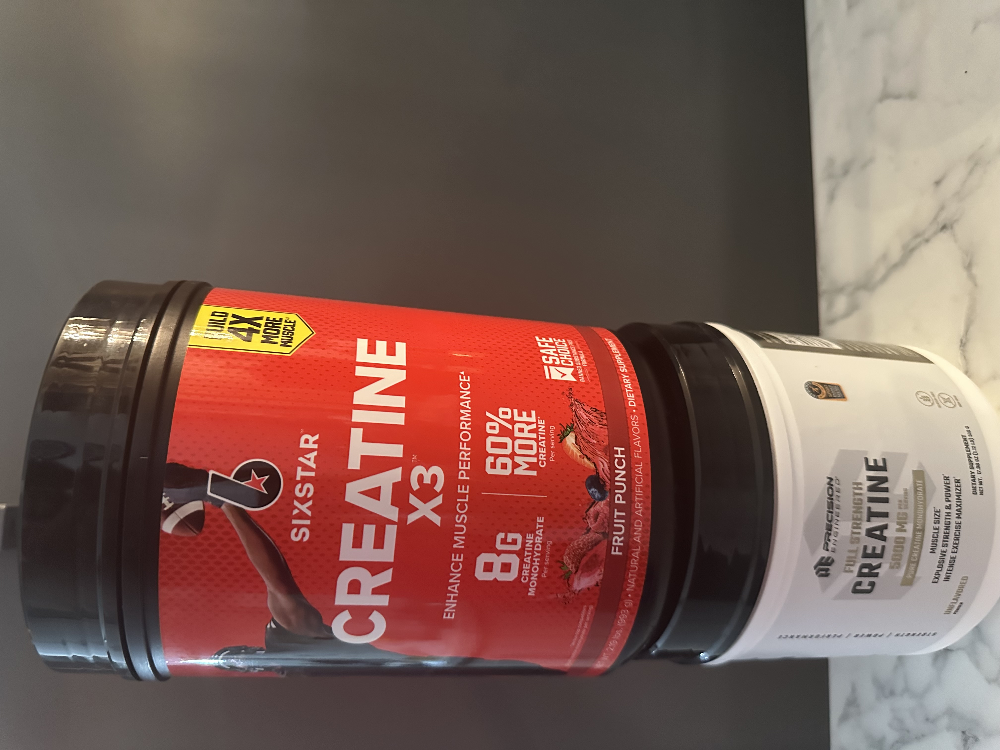
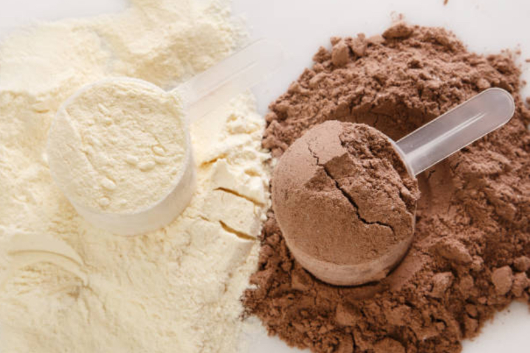
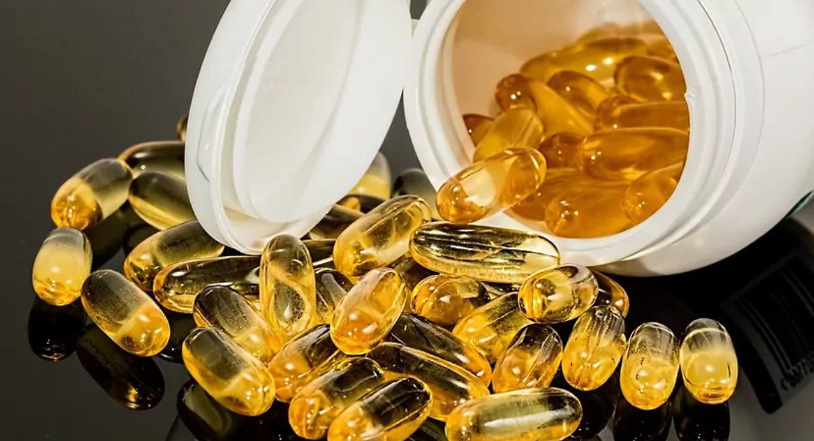

Estos te podrian ayudar para el rendimiento deportivo
Estas cosas podrian ayudar a tu recuperacion y rendimiento

|
Carne La carne es esencial para una buena alimentacion y es una muy buena proteina que ayuda a fortalecer todos tus musculos. Ademas ayuda a trasportar mejor oxigeno a la sangre es una de las mejores opciones que puedas elegir para la recuperacion. |

|
Plato proteico Esto es un ejemplo de un plato proteico que contiene carne , carbohidratos , vitaminas y ayuda que despues del entrenamiento te vuelvas a sentir con energia. |
|  |
creatina La creatina es uno de los mejores beneficios ya que ayuda a la recuperacion rapida, a ganar musculo rapidamente, tener mas energia y tener fuerzas para terminar el deporte que este practicando. |
|  |
Proteína en Polvo La proteina en polvo es una de las mejores opciones por si quieres avanzar en tu deporte o quieras tener una mejor recuperacion mas rapida. Tambien ayuda a construir musculos mejor y ayuda a evitar lesiones ya que fortalece tus musculos, tendones y tejidos. |
|  |
Vitaminas Las vitaminas como b12, vitamina A, vitamina C, Vitamina D ayuda al metabolismo , a tener energia, apoyan al sistema inmunologico y muchos atletas usan estas vitaminas para el rendimiento fisico. |